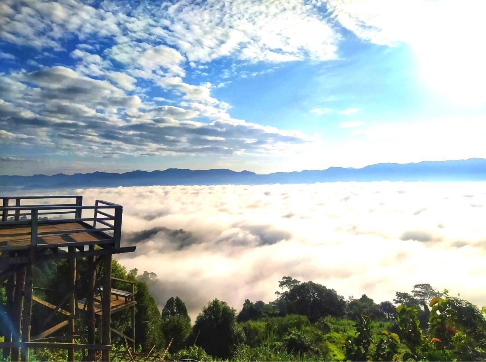

Today i wanna share my last travel experience.Everyone have a different aim. My aim is to travel the whole world. So i started from my own country Bangladesh.
Last time i went to sajek. It is one of the best traveling place to travel in bangladesh. You can call it "Megher desh".Sajek is one of the few place in bangladesh ,which is really natural wonder and natural paradise. I recommended all bangladesi for go their, speciall for Dhaka city people. Small hils, river and forest all in one place. Sajek valley is known for its natural environment and is surrounded by mountains, dense forest, and grassland hill tracks. Many small rivers flow through the mountains among which the Kachalong and the Machalong are notable. On the way to Sajek valley, one has to cross the Mayni range and the Mayni river. The road to Sajek has high peaks and falls. I wanna to trip their again in future again.
